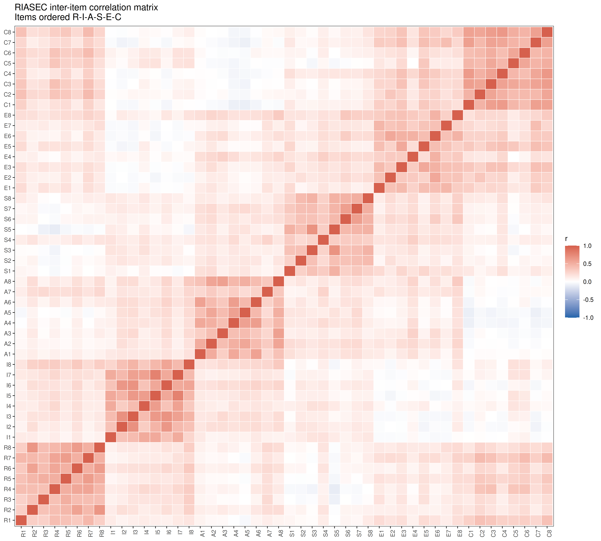
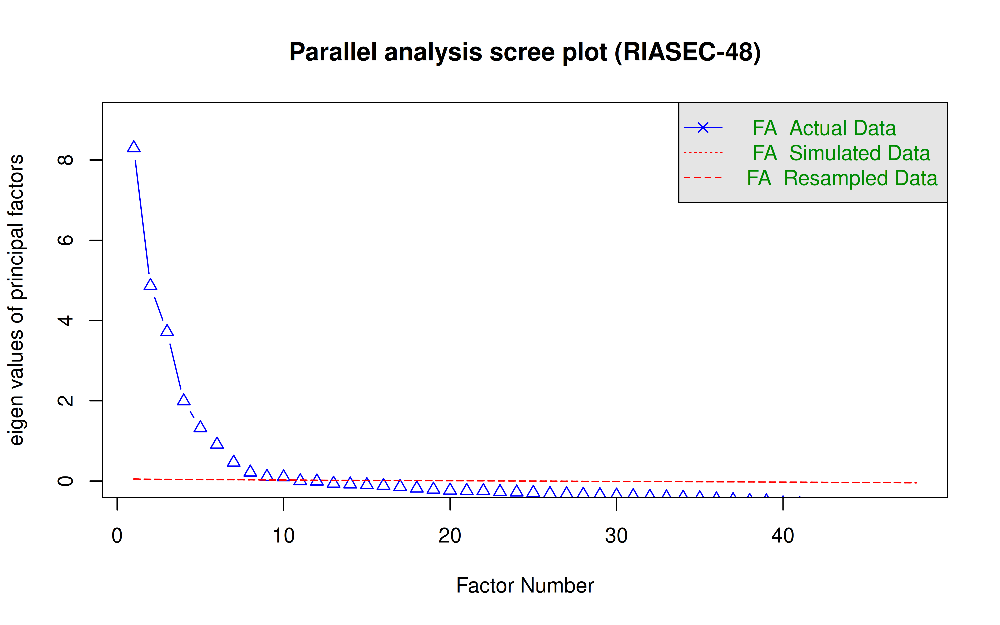
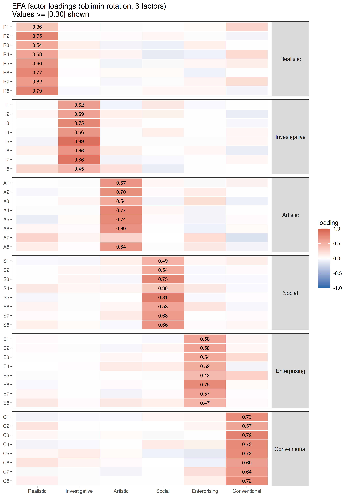
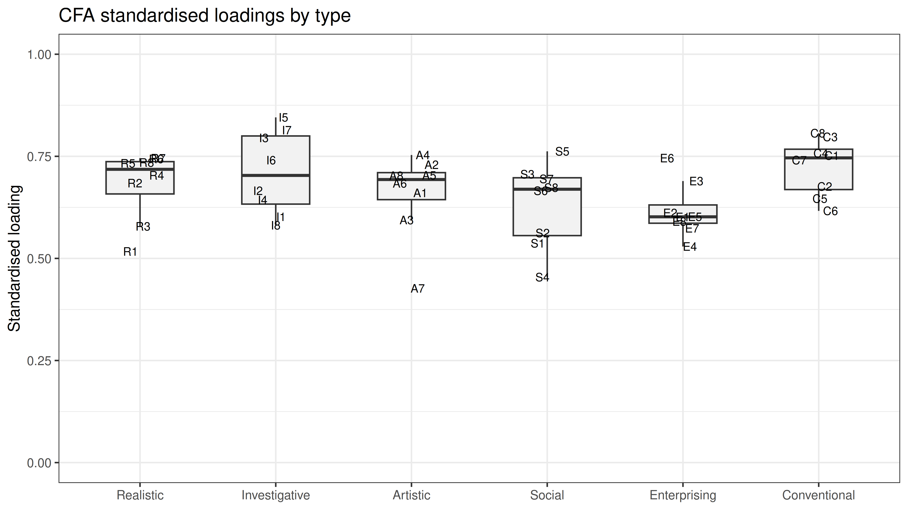
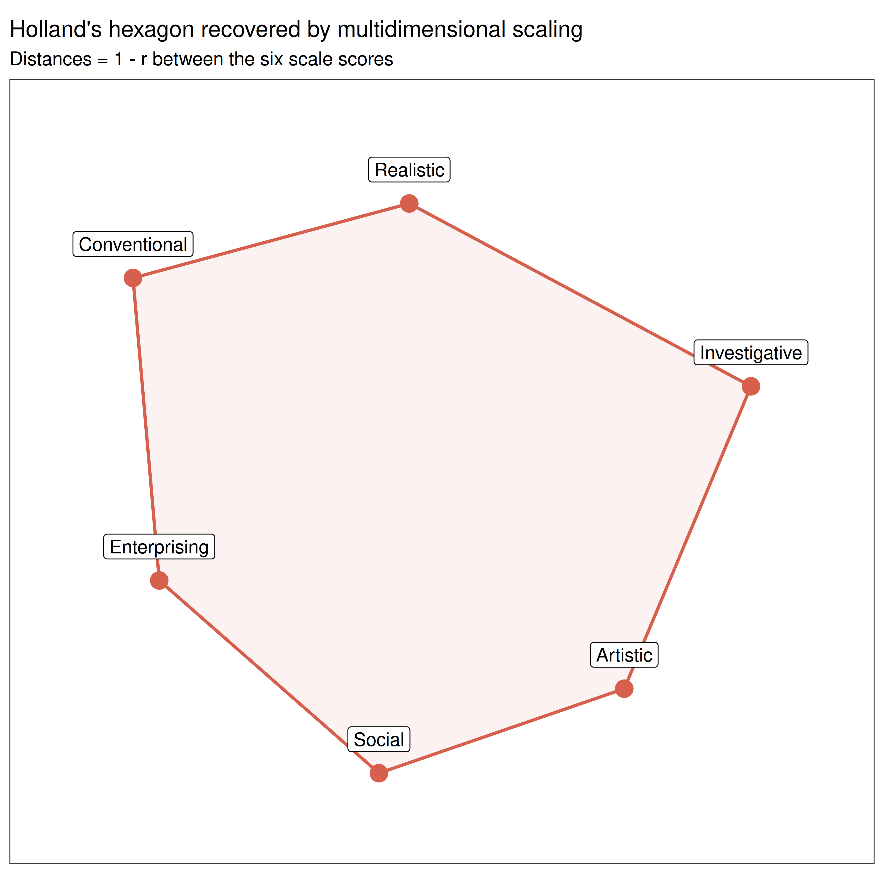
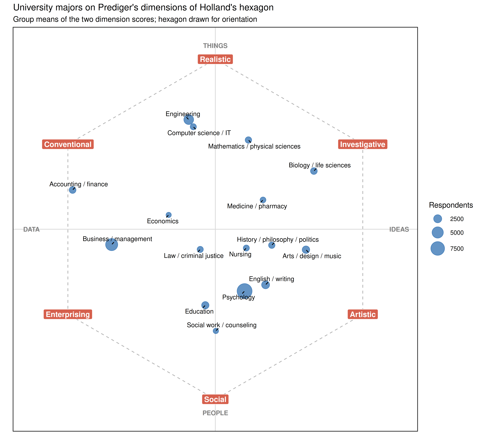
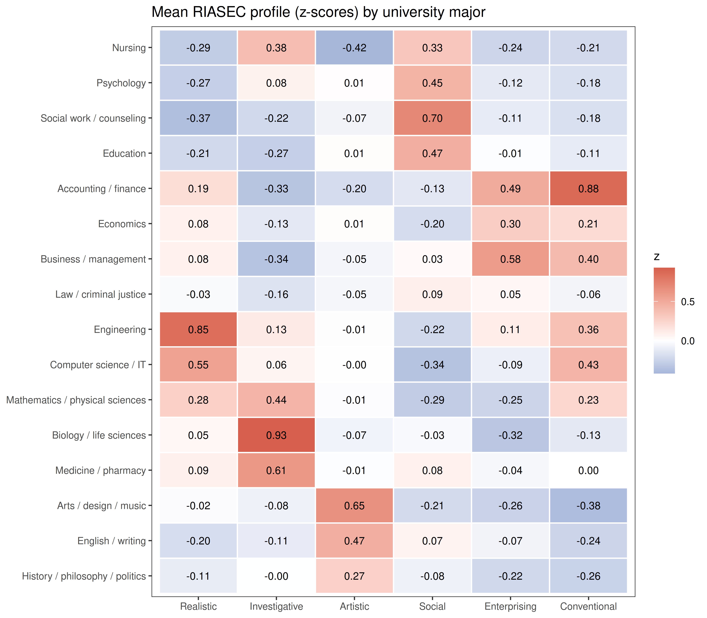
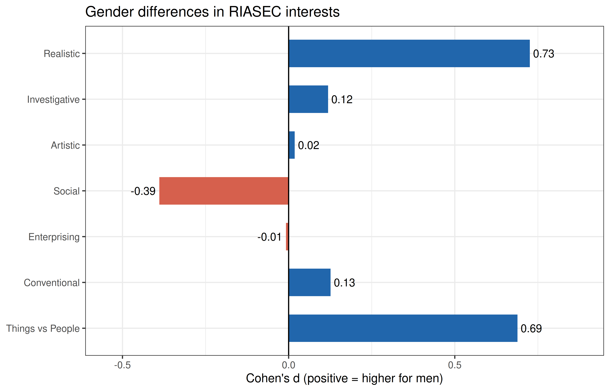
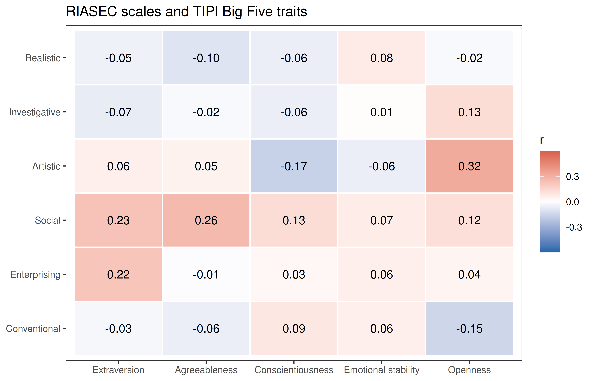

| Rule | Excluded | Remaining |
|---|---|---|
| All 48 items answered | 10,064 | 135,764 |
| No non-existent word ticked | 29,285 | 116,543 |
| At least 2 seconds per item | 1,597 | 144,231 |
| Not the same answer to all 48 items | 449 | 145,379 |
| Age between 13 and 80 | 109 | 145,719 |
| Only record from its network (no retakes) | 45,101 | 100,727 |
| All rules together | 70,764 | 75,064 |
RIASEC Validation: Recovering Holland’s Hexagon
Description
Holland’s (1997) theory of vocational interests sorts people and work environments into six types: Realistic (doers: tools, machines, outdoor work), Investigative (thinkers: science and research), Artistic (creators: art, music, writing), Social (helpers: teaching, care, counselling), Enterprising (persuaders: selling, managing) and Conventional (organisers: records, data, procedures). The theory’s distinctive claim is structural: the six types sit on a hexagon in the order R-I-A-S-E-C, so neighbouring types (R and I) correlate more than alternate types (R and A), which in turn correlate more than opposite types (R and S).
This tutorial validates a 48-item public-domain RIASEC measure (eight activities per type) in 75,064 respondents. It goes beyond reliability and factor analysis: it tests the hexagon itself, places university majors in the interest space, and checks the results against published meta-analyses of gender differences and personality correlates.
Respondents rated how much they would like to perform each activity on a 1-5 scale (1 = Dislike, 3 = Neutral, 5 = Enjoy). The questionnaire also contained the Ten Item Personality Inventory (TIPI; Gosling et al., 2003) and a demographic survey with a free-text question on the respondent’s university major.
Data and cleaning
The data come from the Open-Source Psychometrics Project (RIASEC_data12Dec2018.zip, 145,828 records collected online in 2015-2018). data/prepare_riasec.R applies the cleaning rules below and groups the free-text majors into 16 broad fields; the free text itself is not kept. The most useful rule is built into the questionnaire: a vocabulary checklist asked respondents to tick the words they knew, and three of the sixteen words (cuivocal, florted, verdid) do not exist. A respondent who claims to know a word that does not exist is not reading carefully.
Item List
| Label | Type | Activity |
|---|---|---|
| R1 | Realistic | Test the quality of parts before shipment |
| R2 | Realistic | Lay brick or tile |
| R3 | Realistic | Work on an offshore oil-drilling rig |
| R4 | Realistic | Assemble electronic parts |
| R5 | Realistic | Operate a grinding machine in a factory |
| R6 | Realistic | Fix a broken faucet |
| R7 | Realistic | Assemble products in a factory |
| R8 | Realistic | Install flooring in houses |
| I1 | Investigative | Study the structure of the human body |
| I2 | Investigative | Study animal behavior |
| I3 | Investigative | Do research on plants or animals |
| I4 | Investigative | Develop a new medical treatment or procedure |
| I5 | Investigative | Conduct biological research |
| I6 | Investigative | Study whales and other types of marine life |
| I7 | Investigative | Work in a biology lab |
| I8 | Investigative | Make a map of the bottom of an ocean |
| A1 | Artistic | Conduct a musical choir |
| A2 | Artistic | Direct a play |
| A3 | Artistic | Design artwork for magazines |
| A4 | Artistic | Write a song |
| A5 | Artistic | Write books or plays |
| A6 | Artistic | Play a musical instrument |
| A7 | Artistic | Perform stunts for a movie or television show |
| A8 | Artistic | Design sets for plays |
| S1 | Social | Give career guidance to people |
| S2 | Social | Do volunteer work at a non-profit organization |
| S3 | Social | Help people who have problems with drugs or alcohol |
| S4 | Social | Teach an individual an exercise routine |
| S5 | Social | Help people with family-related problems |
| S6 | Social | Supervise the activities of children at a camp |
| S7 | Social | Teach children how to read |
| S8 | Social | Help elderly people with their daily activities |
| E1 | Enterprising | Sell restaurant franchises to individuals |
| E2 | Enterprising | Sell merchandise at a department store |
| E3 | Enterprising | Manage the operations of a hotel |
| E4 | Enterprising | Operate a beauty salon or barber shop |
| E5 | Enterprising | Manage a department within a large company |
| E6 | Enterprising | Manage a clothing store |
| E7 | Enterprising | Sell houses |
| E8 | Enterprising | Run a toy store |
| C1 | Conventional | Generate the monthly payroll checks for an office |
| C2 | Conventional | Inventory supplies using a hand-held computer |
| C3 | Conventional | Use a computer program to generate customer bills |
| C4 | Conventional | Maintain employee records |
| C5 | Conventional | Compute and record statistical and other numerical data |
| C6 | Conventional | Operate a calculator |
| C7 | Conventional | Handle customers’ bank transactions |
| C8 | Conventional | Keep shipping and receiving records |
Reliability
Cronbach’s alpha and McDonald’s omega (total) for each eight-item scale, with the range of corrected item-total correlations. Omega is computed from a one-factor model of each scale: \(\omega = (\sum\lambda)^2 / [(\sum\lambda)^2 + \sum\psi]\).
Code
reliability <- do.call(rbind, lapply(names(factors), function(f) {
x <- df[, factors[[f]]]
a <- psych::alpha(x, warnings = FALSE)
l <- as.vector(fa(x, nfactors = 1, fm = "ml")$loadings)
data.frame(scale = f,
mean = mean(rowMeans(x)),
sd = sd(rowMeans(x)),
alpha = a$total$raw_alpha,
omega = sum(l)^2 / (sum(l)^2 + sum(1 - l^2)),
r_drop = sprintf("%.2f-%.2f", min(a$item.stats$r.drop), max(a$item.stats$r.drop)))
}))
knitr::kable(reliability, digits = 2, row.names = FALSE,
col.names = c("Scale", "Mean", "SD", "Alpha", "Omega", "Item-total r"))| Scale | Mean | SD | Alpha | Omega | Item-total r |
|---|---|---|---|---|---|
| Realistic | 2.07 | 0.86 | 0.87 | 0.87 | 0.47-0.69 |
| Investigative | 3.02 | 1.03 | 0.89 | 0.89 | 0.54-0.78 |
| Artistic | 2.91 | 1.00 | 0.86 | 0.86 | 0.38-0.69 |
| Social | 3.28 | 0.90 | 0.84 | 0.84 | 0.42-0.69 |
| Enterprising | 2.54 | 0.86 | 0.83 | 0.83 | 0.47-0.69 |
| Conventional | 2.39 | 0.96 | 0.90 | 0.90 | 0.60-0.76 |
All six scales are highly reliable, which is typical of interest scales: liking one activity of a type goes strongly with liking the others.
Inter-Item Correlation Matrix
Code
cor_mat <- cor(df)
cor_long <- melt(cor_mat)
cor_long$Var1 <- factor(cor_long$Var1, levels = item_cols)
cor_long$Var2 <- factor(cor_long$Var2, levels = item_cols)
ggplot(cor_long, aes(x = Var1, y = Var2, fill = value)) +
geom_tile(color = "white", linewidth = 0.2) +
scale_fill_gradient2(low = "#2166ac", mid = "white", high = "#d6604d",
midpoint = 0, limits = c(-1, 1), name = "r") +
theme_bw(base_size = 9) +
theme(axis.text.x = element_text(angle = 90, hjust = 1, size = 7),
axis.text.y = element_text(size = 7),
axis.title = element_blank(),
panel.grid = element_blank()) +
ggtitle("RIASEC inter-item correlation matrix\nItems ordered R-I-A-S-E-C")
Six blocks along the diagonal show the six types. Off the diagonal, most correlations are small but positive: people differ in how much they like activities in general, not only in which activities they like.
Code
between <- outer(substr(item_cols, 1, 1), substr(item_cols, 1, 1), "!=")
cat(sprintf("Correlations between items of different types: %.0f%% positive, mean r = %.2f\n",
100 * mean(cor_mat[between] > 0), mean(cor_mat[between])))Correlations between items of different types: 87% positive, mean r = 0.12Parallel Analysis
Code
eig <- eigen(cor_mat, only.values = TRUE)$values
cat(sprintf("First eigenvalue: %.2f (%.0f%% of the variance); second: %.2f\n",
eig[1], 100 * eig[1] / length(eig), eig[2]))First eigenvalue: 9.07 (19% of the variance); second: 5.71Code
set.seed(42)
pa <- fa.parallel(df, fm = "ml", fa = "fa", n.iter = 5,
main = "Parallel analysis scree plot (RIASEC-48)")
Parallel analysis suggests that the number of factors = 10 and the number of components = NA The first eigenvalue stands above the rest. It reflects the general interest factor seen above (how much someone likes activities of any kind), which is one reason interest scores are often read within a person (which type is highest) rather than only across people. It is modest here, and the next five eigenvalues are clearly above 1 as well: the six types, not one general factor, carry most of the structure.
With 75,064 respondents, the random eigenvalues of parallel analysis are almost exactly 1 and very small factors pass the test, so parallel analysis suggests 10 factors. In samples this large it over-extracts; the question is whether the six theoretical factors appear, which the next two sections test.
Exploratory Factor Analysis (6 Factors)
Code
efa <- fa(df, nfactors = 6, rotate = "oblimin", fm = "ml")
# Name each factor after the type whose items load highest on it
loadings_mat <- unclass(efa$loadings)
fac_type <- sapply(seq_len(ncol(loadings_mat)), function(j)
names(which.max(tapply(loadings_mat[, j], substr(rownames(loadings_mat), 1, 1), mean))))
colnames(loadings_mat) <- type_names[fac_type]
loadings_mat <- loadings_mat[, type_names]
print(round(loadings_mat, 2)) Realistic Investigative Artistic Social Enterprising Conventional
R1 0.36 0.03 -0.02 0.01 0.04 0.28
R2 0.75 -0.03 0.03 0.06 -0.02 -0.07
R3 0.54 0.10 -0.06 -0.09 0.10 -0.01
R4 0.58 0.09 0.06 -0.13 -0.08 0.23
R5 0.66 0.02 -0.07 -0.03 0.06 0.11
R6 0.77 0.02 0.04 0.04 -0.08 0.01
R7 0.62 0.00 -0.05 -0.02 0.07 0.22
R8 0.79 -0.03 -0.02 0.04 0.06 -0.06
I1 -0.02 0.62 -0.07 0.15 -0.04 -0.01
I2 0.06 0.59 0.09 0.08 0.01 -0.11
I3 0.02 0.75 0.07 -0.01 0.01 -0.05
I4 -0.02 0.66 -0.03 0.10 0.01 0.06
I5 -0.06 0.89 -0.02 -0.02 -0.02 0.04
I6 0.09 0.66 0.10 0.01 0.05 -0.12
I7 -0.02 0.86 -0.06 -0.04 0.01 0.05
I8 0.25 0.45 0.19 -0.11 0.00 0.00
A1 -0.01 -0.02 0.67 0.05 -0.03 0.08
A2 -0.05 -0.02 0.70 0.02 0.12 -0.01
A3 0.00 0.07 0.54 -0.07 0.21 -0.10
A4 -0.02 -0.03 0.77 0.04 -0.06 0.01
A5 -0.10 0.04 0.74 0.02 -0.07 0.03
A6 0.06 0.03 0.69 0.02 -0.08 0.04
A7 0.26 0.06 0.27 0.00 0.22 -0.18
A8 0.12 0.02 0.64 -0.02 0.14 -0.07
S1 -0.04 -0.05 0.09 0.49 0.06 0.10
S2 0.02 0.05 0.07 0.54 -0.03 0.03
S3 0.00 0.07 -0.05 0.75 -0.04 -0.03
S4 0.14 0.05 0.07 0.36 0.15 -0.03
S5 -0.06 -0.02 0.00 0.81 -0.03 0.02
S6 0.07 -0.02 0.05 0.58 0.17 -0.05
S7 0.02 0.01 0.12 0.63 0.02 0.02
S8 0.09 0.04 -0.04 0.66 0.03 0.05
E1 0.03 0.01 -0.01 -0.04 0.58 0.07
E2 0.03 -0.02 -0.06 0.08 0.58 0.05
E3 -0.01 -0.01 0.05 0.02 0.54 0.22
E4 0.00 0.02 0.13 0.11 0.52 -0.06
E5 -0.02 0.02 0.01 -0.02 0.43 0.30
E6 -0.04 -0.01 0.03 0.01 0.75 0.04
E7 0.05 0.00 -0.07 0.02 0.57 0.02
E8 0.15 0.03 0.15 0.09 0.47 0.03
C1 -0.06 -0.03 -0.04 0.06 0.08 0.73
C2 0.17 -0.01 0.00 0.00 0.07 0.57
C3 0.05 -0.03 0.04 -0.03 0.01 0.79
C4 -0.07 -0.03 -0.01 0.13 0.08 0.73
C5 0.04 0.12 0.04 -0.08 -0.13 0.72
C6 0.17 0.07 0.03 0.00 -0.08 0.60
C7 -0.03 -0.02 -0.06 0.01 0.21 0.64
C8 0.09 -0.02 0.00 0.00 0.09 0.72Code
load_long <- melt(loadings_mat, varnames = c("item", "factor"), value.name = "loading")
load_long$item <- factor(load_long$item, levels = rev(item_cols))
load_long$expected <- factor(item_labels[as.character(load_long$item)], levels = type_names)
ggplot(load_long, aes(x = factor, y = item, fill = loading)) +
geom_tile(color = "white", linewidth = 0.3) +
geom_text(aes(label = ifelse(abs(loading) >= 0.30, sprintf("%.2f", loading), "")), size = 2.5) +
scale_fill_gradient2(low = "#2166ac", mid = "white", high = "#d6604d",
midpoint = 0, limits = c(-1, 1), name = "loading") +
facet_grid(expected ~ ., scales = "free_y", space = "free_y") +
theme_bw(base_size = 9) +
theme(strip.text.y = element_text(angle = 0, size = 8),
axis.text.y = element_text(size = 7),
axis.title = element_blank(),
panel.grid = element_blank()) +
ggtitle("EFA factor loadings (oblimin rotation, 6 factors)\nValues >= |0.30| shown")
Code
primary <- type_names[substr(rownames(loadings_mat), 1, 1)]
found <- colnames(loadings_mat)[apply(abs(loadings_mat), 1, which.max)]
cat(sprintf("Items whose largest loading is on their own type: %d of %d\n",
sum(primary == found), length(found)))Items whose largest loading is on their own type: 48 of 48Code
if (any(primary != found))
print(data.frame(item = rownames(loadings_mat)[primary != found],
intended = primary[primary != found], largest = found[primary != found]))Confirmatory Factor Analysis
A six-factor model in which each item loads only on its own type, the factors are allowed to correlate, and the items are treated as continuous (robust maximum likelihood).
Code
cfa_model <- paste(sapply(types, function(t)
paste0(t, " =~ ", paste(paste0(t, 1:8), collapse = " + "))), collapse = "\n")
cat(cfa_model, "\n\n")R =~ R1 + R2 + R3 + R4 + R5 + R6 + R7 + R8
I =~ I1 + I2 + I3 + I4 + I5 + I6 + I7 + I8
A =~ A1 + A2 + A3 + A4 + A5 + A6 + A7 + A8
S =~ S1 + S2 + S3 + S4 + S5 + S6 + S7 + S8
E =~ E1 + E2 + E3 + E4 + E5 + E6 + E7 + E8
C =~ C1 + C2 + C3 + C4 + C5 + C6 + C7 + C8 Code
cfa_fit <- cfa(cfa_model, data = df, estimator = "MLR", std.lv = TRUE)
fit <- fitMeasures(cfa_fit, c("chisq.scaled", "df", "cfi.robust", "tli.robust",
"rmsea.robust", "srmr"))
knitr::kable(data.frame(index = c("Chi-square (scaled)", "df", "CFI (robust)", "TLI (robust)",
"RMSEA (robust)", "SRMR"),
value = round(unname(fit), 3)),
col.names = c("Fit index", "Value"), row.names = FALSE)| Fit index | Value |
|---|---|
| Chi-square (scaled) | 302987.212 |
| df | 1065.000 |
| CFI (robust) | 0.802 |
| TLI (robust) | 0.790 |
| RMSEA (robust) | 0.066 |
| SRMR | 0.065 |
Code
std <- standardizedSolution(cfa_fit)
lam <- std[std$op == "=~", c("lhs", "rhs", "est.std")]
lam$lhs <- factor(type_names[lam$lhs], levels = type_names)
ggplot(lam, aes(x = lhs, y = est.std)) +
geom_boxplot(outlier.shape = NA, fill = "grey95", width = 0.5) +
geom_text(aes(label = rhs), size = 2.6, position = position_jitter(width = 0.15, seed = 1)) +
ylim(0, 1) +
labs(x = NULL, y = "Standardised loading") +
theme_bw(base_size = 10) +
ggtitle("CFA standardised loadings by type")
With 48 items and tens of thousands of respondents, the chi-square test rejects any model, so the approximate fit indices are the ones to read. They disagree: RMSEA and SRMR (0.066 and 0.065) are acceptable, but CFI (0.80) is well below the usual .90-.95 benchmarks. This is the normal result for interest inventories. A strict simple-structure model forbids every cross-loading, yet neighbouring types share activities by design (that is the hexagon), and the general factor adds variance that no single type owns. The EFA above shows where: Perform stunts for a movie or television show (A7) loads almost equally on Artistic, Realistic and Enterprising and is the weakest item in the CFA (standardised loading 0.43). For scoring, what matters is that every item loads clearly on its own type (0.43-0.85).
Holland’s Hexagon
Correlations by distance on the hexagon
Code
scale_cor <- cor(scores)
knitr::kable(round(scale_cor, 2))| Realistic | Investigative | Artistic | Social | Enterprising | Conventional | |
|---|---|---|---|---|---|---|
| Realistic | 1.00 | 0.30 | 0.18 | 0.07 | 0.29 | 0.46 |
| Investigative | 0.30 | 1.00 | 0.31 | 0.18 | 0.02 | 0.07 |
| Artistic | 0.18 | 0.31 | 1.00 | 0.31 | 0.28 | -0.02 |
| Social | 0.07 | 0.18 | 0.31 | 1.00 | 0.38 | 0.15 |
| Enterprising | 0.29 | 0.02 | 0.28 | 0.38 | 1.00 | 0.48 |
| Conventional | 0.46 | 0.07 | -0.02 | 0.15 | 0.48 | 1.00 |
Code
# Distance between two types on the hexagon: 1 = adjacent, 2 = alternate, 3 = opposite
hex_dist <- outer(0:5, 0:5, function(i, j) pmin(abs(i - j), 6 - abs(i - j)))
dimnames(hex_dist) <- dimnames(scale_cor)
lower <- lower.tri(scale_cor)
by_distance <- data.frame(
distance = c("Adjacent (e.g. R-I)", "Alternate (e.g. R-A)", "Opposite (e.g. R-S)"),
pairs = as.vector(table(hex_dist[lower])),
mean_r = as.vector(tapply(scale_cor[lower], hex_dist[lower], mean)),
min_r = as.vector(tapply(scale_cor[lower], hex_dist[lower], min)),
max_r = as.vector(tapply(scale_cor[lower], hex_dist[lower], max)))
knitr::kable(by_distance, digits = 2, row.names = FALSE,
col.names = c("Distance", "Pairs", "Mean r", "Min r", "Max r"))| Distance | Pairs | Mean r | Min r | Max r |
|---|---|---|---|---|
| Adjacent (e.g. R-I) | 6 | 0.37 | 0.30 | 0.48 |
| Alternate (e.g. R-A) | 6 | 0.19 | 0.07 | 0.29 |
| Opposite (e.g. R-S) | 3 | 0.02 | -0.02 | 0.07 |
Randomization test of hypothesized order relations
The hexagon makes 72 predictions about the 15 correlations: each of the 6 adjacent correlations should exceed each of the 6 alternate and the 3 opposite correlations (36 + 18), and each alternate correlation should exceed each opposite one (18). Hubert and Arabie’s (1987) randomization test counts how many predictions hold and compares the count with all 720 ways of assigning the six labels to the hexagon. The correspondence index (CI) is (agreements − violations) / 72, from −1 to +1.
Code
pair_idx <- which(lower, arr.ind = TRUE)
order_test <- function(r, d) {
rv <- r[pair_idx]; dv <- d[pair_idx]
pred <- outer(dv, dv, "<") # pair p should correlate more than pair q
diff <- outer(rv, rv, "-")
c(agree = sum(pred & diff > 0), violate = sum(pred & diff < 0), predictions = sum(pred))
}
observed <- order_test(scale_cor, hex_dist)
perms <- as.matrix(expand.grid(rep(list(1:6), 6)))
perms <- perms[apply(perms, 1, function(p) length(unique(p)) == 6), ] # all 720 orders
perm_agree <- apply(perms, 1, function(p) order_test(scale_cor[p, p], hex_dist)["agree"])
ci <- (observed[["agree"]] - observed[["violate"]]) / observed[["predictions"]]
cat(sprintf("Predictions met: %d of %d, violated: %d\nCorrespondence index: %.2f\nExact p (%d permutations): %.4f\n",
observed[["agree"]], observed[["predictions"]], observed[["violate"]],
ci, nrow(perms), mean(perm_agree >= observed[["agree"]])))Predictions met: 72 of 72, violated: 0
Correspondence index: 1.00
Exact p (720 permutations): 0.0167Every one of the 72 predictions holds, so the correspondence index is the maximum of 1. The p-value is as small as this test allows: rotating the hexagon (6 ways) or reflecting it (2 ways) keeps every prediction, so 12 of the 720 labelings fit equally well, and the minimum p is 12/720 ≈ .017. Tracey and Rounds (1993) used this test in a structural meta-analysis of RIASEC correlation matrices and found that the circular order holds across many samples and instruments; this sample is a textbook case.
The hexagon recovered from the data
Multidimensional scaling of the six scale correlations, using no information about the theory, places the types in two dimensions. If Holland is right, they should fall around a circle in R-I-A-S-E-C order.
Code
mds <- cmdscale(as.dist(1 - scale_cor), k = 2)
# Rotate (and reflect if needed) so that Realistic is at the top and the order runs clockwise,
# which only changes the orientation of the plot, not distances
rot <- function(m, a) m %*% matrix(c(cos(a), -sin(a), sin(a), cos(a)), 2) # rows rotated by a
mds <- rot(mds, pi / 2 - atan2(mds["Realistic", 2], mds["Realistic", 1]))
if (mds["Investigative", 1] < 0) mds[, 1] <- -mds[, 1]
mds_df <- data.frame(type = rownames(mds), x = mds[, 1], y = mds[, 2])
mds_df$angle <- round(90 - atan2(mds_df$y, mds_df$x) * 180 / pi, 6) %% 360
mds_df <- mds_df[order(mds_df$angle), ]
cat("Order going clockwise from Realistic:", paste(substr(mds_df$type, 1, 1), collapse = "-"), "\n")Order going clockwise from Realistic: R-I-A-S-E-C Code
ggplot(mds_df, aes(x, y)) +
geom_polygon(fill = "#d6604d", alpha = 0.08, colour = "#d6604d", linewidth = 0.8) +
geom_point(size = 4, colour = "#d6604d") +
geom_label(aes(label = type), nudge_y = 0.05, size = 3.5) +
scale_x_continuous(expand = expansion(mult = 0.2)) +
scale_y_continuous(expand = expansion(mult = 0.15)) +
coord_equal() +
theme_bw(base_size = 10) +
theme(axis.title = element_blank(), axis.text = element_blank(),
axis.ticks = element_blank(), panel.grid = element_blank()) +
ggtitle("Holland's hexagon recovered by multidimensional scaling",
subtitle = "Distances = 1 - r between the six scale scores")
The polygon is not a perfect regular hexagon (no empirical one is: Realistic and Investigative usually sit further apart than the theory implies), but the order around the circle is the test, and it is the one the theory predicts.
Majors in the Interest Space
Prediger (1982) showed that the hexagon has two underlying bipolar dimensions: People vs. Things (Social against Realistic) and Data vs. Ideas (Enterprising and Conventional against Investigative and Artistic). Each respondent’s position on these dimensions is the sum of their six z-scores weighted by the cosine and sine of each type’s angle on the hexagon.
Code
w_x <- cos(hex_angle * pi / 180) # horizontal axis: Data (left) vs Ideas (right)
w_y <- sin(hex_angle * pi / 180) # vertical axis: Things (top) vs People (bottom)
knitr::kable(data.frame(type = type_names, angle = hex_angle,
ideas_vs_data = round(w_x, 2), things_vs_people = round(w_y, 2)),
row.names = FALSE,
col.names = c("Type", "Angle", "Weight: Ideas vs Data", "Weight: Things vs People"))| Type | Angle | Weight: Ideas vs Data | Weight: Things vs People |
|---|---|---|---|
| Realistic | 90 | 0.00 | 1.0 |
| Investigative | 30 | 0.87 | 0.5 |
| Artistic | -30 | 0.87 | -0.5 |
| Social | -90 | 0.00 | -1.0 |
| Enterprising | -150 | -0.87 | -0.5 |
| Conventional | -210 | -0.87 | 0.5 |
Code
df_riasec$ideas_data <- as.vector(as.matrix(scores_z) %*% w_x)
df_riasec$things_people <- as.vector(as.matrix(scores_z) %*% w_y)The 16 major groups come from the free-text answers of the respondents who had attended university. If the scales are valid, each group should sit near the type its field calls for: engineering near Realistic, accounting near Conventional, business near Enterprising, art near Artistic, psychology and education near Social.
Code
has_major <- !is.na(df_riasec$major_group)
majors <- aggregate(cbind(ideas_data, things_people) ~ major_group,
data = df_riasec[has_major, ], FUN = mean)
majors$n <- as.vector(table(df_riasec$major_group))
radius <- 1.15 * max(sqrt(majors$ideas_data^2 + majors$things_people^2))
hex <- data.frame(type = type_names,
x = radius * cos(hex_angle * pi / 180),
y = radius * sin(hex_angle * pi / 180))
ggplot() +
geom_polygon(data = hex, aes(x, y), fill = NA, colour = "grey70", linetype = "dashed") +
geom_hline(yintercept = 0, colour = "grey85") +
geom_vline(xintercept = 0, colour = "grey85") +
geom_label(data = hex, aes(x, y, label = type), fill = "#d6604d", colour = "white",
fontface = "bold", size = 3.5) +
geom_point(data = majors, aes(ideas_data, things_people, size = n), colour = "#2166ac", alpha = 0.7) +
geom_text_repel(data = majors, aes(ideas_data, things_people, label = major_group),
size = 3, seed = 42, min.segment.length = 0) +
annotate("text", x = c(-radius, radius, 0, 0) * 1.08, y = c(0, 0, radius, -radius) * 1.08,
label = c("DATA", "IDEAS", "THINGS", "PEOPLE"), colour = "grey50", size = 3, fontface = "bold") +
scale_size_area(max_size = 9, name = "Respondents") +
coord_equal(clip = "off") +
theme_bw(base_size = 10) +
theme(axis.title = element_blank(), axis.text = element_blank(),
axis.ticks = element_blank(), panel.grid = element_blank()) +
ggtitle("University majors on Prediger's dimensions of Holland's hexagon",
subtitle = "Group means of the two dimension scores; hexagon drawn for orientation")
Code
profile <- aggregate(scores_z[has_major, ], by = list(major = df_riasec$major_group[has_major]), FUN = mean)
profile_long <- melt(profile, id.vars = "major", variable.name = "type", value.name = "z")
profile_long$type <- factor(profile_long$type, levels = type_names)
ggplot(profile_long, aes(x = type, y = major, fill = z)) +
geom_tile(color = "white", linewidth = 0.5) +
geom_text(aes(label = sprintf("%.2f", z)), size = 3) +
scale_fill_gradient2(low = "#2166ac", mid = "white", high = "#d6604d", midpoint = 0, name = "z") +
scale_y_discrete(limits = rev(levels(df_riasec$major_group))) +
theme_bw(base_size = 10) +
theme(axis.title = element_blank(), panel.grid = element_blank()) +
ggtitle("Mean RIASEC profile (z-scores) by university major")
Code
top <- data.frame(major = profile$major,
n = majors$n,
highest = apply(profile[, type_names], 1, function(z) names(z)[order(-z)][1]),
second = apply(profile[, type_names], 1, function(z) names(z)[order(-z)][2]))
knitr::kable(top, row.names = FALSE, format.args = list(big.mark = ","),
col.names = c("Major", "Respondents", "Highest type", "Second type"))| Major | Respondents | Highest type | Second type |
|---|---|---|---|
| Nursing | 1,369 | Investigative | Social |
| Psychology | 8,986 | Social | Investigative |
| Social work / counseling | 1,073 | Social | Artistic |
| Education | 2,038 | Social | Artistic |
| Accounting / finance | 1,733 | Conventional | Enterprising |
| Economics | 1,010 | Enterprising | Conventional |
| Business / management | 5,829 | Enterprising | Conventional |
| Law / criminal justice | 1,418 | Social | Enterprising |
| Engineering | 3,719 | Realistic | Conventional |
| Computer science / IT | 1,416 | Realistic | Conventional |
| Mathematics / physical sciences | 1,569 | Investigative | Realistic |
| Biology / life sciences | 1,703 | Investigative | Realistic |
| Medicine / pharmacy | 1,252 | Investigative | Realistic |
| Arts / design / music | 2,145 | Artistic | Realistic |
| English / writing | 2,425 | Artistic | Social |
| History / philosophy / politics | 1,539 | Artistic | Investigative |
This is evidence that internal statistics cannot give: the scales separate groups of people who chose different fields, mostly in the directions Holland’s theory predicts. Engineering is Realistic, accounting Conventional, business and economics Enterprising, arts and English Artistic, and psychology, social work and education Social.
Medicine, biology and the physical sciences are Investigative, as expected. The exceptions are informative too: nursing comes out Investigative rather than Social (Social is second), and computer science comes out Realistic. Look at the items: seven of the eight Investigative activities are about biology, medicine or marine life (Study the structure of the human body, Develop a new medical treatment), and there is no item about computing or mathematics, while Assemble electronic parts is a Realistic item. So this Investigative scale is really a life-science scale, and a validity study is also a way of finding out what a scale measures in practice. A mathematics or computing item would broaden it.
Gender Differences
Su, Rounds and Armstrong (2009) meta-analysed vocational interests in over 500,000 people and found large differences on the People-Things dimension: men score higher on Realistic (d ≈ 0.84) and women higher on Social (d ≈ −0.68), with d ≈ 0.93 on Things vs People. Positive d means higher scores for men.
Code
mf <- df_riasec$gender %in% c("Male", "Female")
cohen_d <- function(x, g) {
m <- tapply(x, g, mean); s <- tapply(x, g, var); n <- tapply(x, g, length)
unname((m["Male"] - m["Female"]) / sqrt(((n["Male"] - 1) * s["Male"] + (n["Female"] - 1) * s["Female"]) / (sum(n) - 2)))
}
g <- droplevels(df_riasec$gender[mf])
gender_d <- data.frame(
scale = c(type_names, "Things vs People"),
d = c(sapply(scores[mf, ], cohen_d, g = g), cohen_d(df_riasec$things_people[mf], g)))
gender_d$scale <- factor(gender_d$scale, levels = rev(gender_d$scale))
cat(sprintf("Men: %s, women: %s\n", format(sum(g == "Male"), big.mark = ","),
format(sum(g == "Female"), big.mark = ",")))Men: 23,958, women: 50,433Code
knitr::kable(gender_d[, c("scale", "d")], digits = 2, row.names = FALSE, col.names = c("Scale", "Cohen's d"))| Scale | Cohen’s d |
|---|---|
| Realistic | 0.73 |
| Investigative | 0.12 |
| Artistic | 0.02 |
| Social | -0.39 |
| Enterprising | -0.01 |
| Conventional | 0.13 |
| Things vs People | 0.69 |
Code
ggplot(gender_d, aes(x = d, y = scale, fill = d > 0)) +
geom_col(width = 0.6) +
geom_vline(xintercept = 0) +
geom_text(aes(label = sprintf("%.2f", d), hjust = ifelse(d > 0, -0.15, 1.15)), size = 3.2) +
scale_fill_manual(values = c(`TRUE` = "#2166ac", `FALSE` = "#d6604d"), guide = "none") +
scale_x_continuous(expand = expansion(mult = 0.2)) +
labs(x = "Cohen's d (positive = higher for men)", y = NULL) +
theme_bw(base_size = 10) +
ggtitle("Gender differences in RIASEC interests")
The pattern is the one in the meta-analysis: the largest differences are on Realistic and Social and on the Things-People dimension that runs between them, and the other four types differ little. The sizes are smaller, especially for Social. This is a self-selected online sample with twice as many women as men, many of them students of psychology and other social fields, so the men and women here are probably more alike in their interests than in the general population.
Interests and Personality
Interests and personality are related but distinct. In the meta-analysis by Barrick, Mount and Gupta (2003), the two strongest links were Extraversion with Enterprising (ρ ≈ .41) and Openness with Artistic (ρ ≈ .39). The TIPI measures each Big Five trait with two items (one reverse-keyed, recoded 8 − x), so its correlations are attenuated by low reliability.
Code
tipi <- df_riasec[, paste0("TIPI", 1:10)]
rev7 <- function(x) 8 - x
big5 <- data.frame(
Extraversion = (tipi$TIPI1 + rev7(tipi$TIPI6)) / 2,
Agreeableness = (rev7(tipi$TIPI2) + tipi$TIPI7) / 2,
Conscientiousness = (tipi$TIPI3 + rev7(tipi$TIPI8)) / 2,
`Emotional stability` = (rev7(tipi$TIPI4) + tipi$TIPI9) / 2,
Openness = (tipi$TIPI5 + rev7(tipi$TIPI10)) / 2,
check.names = FALSE)
rb <- round(cor(scores, big5, use = "pairwise.complete.obs"), 2)
rb_long <- melt(rb, varnames = c("type", "trait"), value.name = "r")
rb_long$type <- factor(rb_long$type, levels = rev(type_names))
ggplot(rb_long, aes(x = trait, y = type, fill = r)) +
geom_tile(color = "white", linewidth = 0.5) +
geom_text(aes(label = sprintf("%.2f", r)), size = 3.5) +
scale_fill_gradient2(low = "#2166ac", mid = "white", high = "#d6604d",
midpoint = 0, limits = c(-0.6, 0.6), name = "r") +
theme_bw(base_size = 10) +
theme(axis.title = element_blank(), panel.grid = element_blank()) +
ggtitle("RIASEC scales and TIPI Big Five traits")
The correlations are small to moderate (interests are not personality), and the largest ones are where the meta-analysis puts them: Openness with Artistic, Agreeableness and Extraversion with Social, Extraversion with Enterprising. They are smaller than the meta-analytic values, which are corrected for unreliability, while the two-item TIPI scales are short and unreliable.
Summary
| Evidence | Result |
|---|---|
| Reliability | Alpha 0.83-0.90, omega 0.83-0.90 |
| Factor structure (EFA) | 48 of 48 items load highest on their own type |
| Factor structure (CFA) | RMSEA 0.066 and SRMR 0.065 acceptable, CFI 0.80 low (cross-loadings between neighbouring types) |
| Hexagonal order | 72 of 72 order predictions met, CI = 1.00, p = 0.0167 |
| Majors (criterion groups) | Most fields score highest on the type their work calls for; nursing and computing reveal a life-science Investigative scale |
| Gender differences | Realistic d = 0.73, Social d = -0.39, Things vs People d = 0.69 |
| Personality correlates | Extraversion-Enterprising r = 0.22, Openness-Artistic r = 0.32 |
References
Barrick, M. R., Mount, M. K., & Gupta, R. (2003). Meta-analysis of the relationship between the five-factor model of personality and Holland’s occupational types. Personnel Psychology, 56(1), 45-74.
Gosling, S. D., Rentfrow, P. J., & Swann, W. B., Jr. (2003). A very brief measure of the Big-Five personality domains. Journal of Research in Personality, 37(6), 504-528.
Holland, J. L. (1997). Making vocational choices: A theory of vocational personalities and work environments (3rd ed.). Psychological Assessment Resources.
Hubert, L., & Arabie, P. (1987). Evaluating order hypotheses within proximity matrices. Psychological Bulletin, 102(1), 172-178.
Prediger, D. J. (1982). Dimensions underlying Holland’s hexagon: Missing link between interests and occupations? Journal of Vocational Behavior, 21(3), 259-287.
Su, R., Rounds, J., & Armstrong, P. I. (2009). Men and things, women and people: A meta-analysis of sex differences in interests. Psychological Bulletin, 135(6), 859-884.
Tracey, T. J. G., & Rounds, J. (1993). Evaluating Holland’s and Gati’s vocational-interest models: A structural meta-analysis. Psychological Bulletin, 113(2), 229-246.
Data: Open-Source Psychometrics Project, openpsychometrics.org/_rawdata.